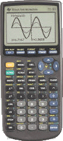
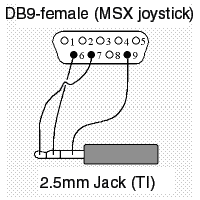

|
Zou je graag willen dat je TI-83 met je MSX communiceert? Laat Laurens je
uitleggen hoe je dit op een goedkope en makkelijke manier voor elkaar
krijgt.
|
| |
|
|
| |
Inhoud
Aan het werk
Ja, MSX is cool
Software
Q & A
Waar te krijgen?
|
|
|
|
|
|
|
| TI-83 specificaties |
- Z80 processor @ 6 MHz
- 256 kB rom
- 32 kB ram, waarvan ± 27 kB vrij
- Display van 96×64, zwart/wit
- Trage display-controller met eigen vram
|
|
|
|
|
 |
| Figuur 2:
Texas Intruments TI-83 |
|
|
|
|
|
| |
Texas Instruments heeft al een tijdje een serie grafische rekenmachines op de
markt. Deze rekenmachines kunnen via een kabel aan een pc gelinkt worden.
Echter, de ‘officiële’ kabel is erg duur, en daarom zijn er simpele
‘alternatieve’ kabels gemaakt door derden, waar ook aparte software voor nodig
is. Welnu, als dat voor de pc kan, waarom dan niet ook voor de MSX?
Aan het werk
Nu ben ik de trotse bezitter van een TI-83, dus ben ik aan het werk getogen.
Eerste missie was om zelf een kabel te maken, de kabel voor pc is namelijk
ongeschikt voor MSX aangezien er gebruik wordt gemaakt van twee
printerstatusbits, terwijl de MSX maar één statusbit — voor input — heeft.
Bovendien is de connector incompatible, dus je hebt sowieso toch al een
verloopstukje nodig. Maar goed, ik maak de kabel echter wel op dezelfde manier
als de TI paralelle link voor de pc. Nu, wat voor poort gebruiken we dan?
Natuurlijk, de meest formidabele poort in MSX-land, altijd makkelijk te
bereiken — nu ja... —, jawel, de joystick-poort! Deze kan zo ingesteld worden
dat hij vier bits heeft voor de invoer, en drie bits voor de uitvoer en dat
voldoet perfect aan onze wensen, want wij hebben slechts twee
uitvoer-pinnetjes en twee invoer-pinnetjes nodig.
 |
| Figuur 1:
Let wel: een 2.5mm jack is een tikkeltje kleiner dan een ‘gewone’ jack
zoals die van een koptelefoon. Bovendien passen ze niet allemaal in een TI
rekenmachine, omdat het hulsje meestal te breed is. Ik raad daarom ook
je aan je TI naar de elektronicawinkel mee te nemen om daar ter plekke
te kijken of de jack goed past. |
|
|
Wel, dat gedaan ging ik proberen om bytes heen en weer te kunnen verzenden.
Het was even vissen maar aan de hand van een rom-dumpprogrammaatje en de
C-source voor het ontvangproggie aan de pc-kant lukte het mij uiteindelijk om
bytes te ontvangen. Nu ik zover was wist ik natuurlijk al best wel veel over
dat linkkabeltje van de rekenmachine en had ik een idee om mijn TI 2 MSX
kabeltje te versimpelen. Ik zal het even uitleggen, het zit namelijk zo dat
dat kabeltje maar twee aders telt en de TI kan gewoon zowel lezen en
schrijven via één en dezelfde poort. Helaas heeft een printerpoort geen pins
die zowel ontvangen als zenden kunnen, dus dat probleem moest worden opgelost
met enkele diodes. Echter, zoals je misschien al weet, pins 5 en 6 — de
‘vuurknop-pins’ — van de joystickpoort kunnen ook zowel lezen als schrijven.
Een joystick gebruikt de leesfunctie, JoyNet en mijn eerste versie van het
TI2MSX-kabeltje gebruiken de schrijffunctie. Maar als ik nu gewoon beide door
elkaar gebruik, net zoals de TI-rekenmachines dat doen, dan zou dat wel eens
kunnen gaan werken.
Ja, MSX is cool
Welnu, even omsolderen dus, en ja hoor, het werkt! Dus de MSX-versie van de
TI-linkkabel is echt zo makkelijk te maken dat het gewoon niet
makkelijker kan! Het is nu namelijk niet meer dan een verloopstukje. Dat is MSX
voordeel één ten opzichte van de pc... De andere voordelen? Wel, op de
printerpoort van de pc — en ook op die van de MSX trouwens — staan ongebruikte
pinnetjes standaard aan (=op 0), wat op zich ook wel zijn logica heeft, want
zodoende is het laatst verzonden byte een 0. Als je nu een TI aansluit zonder
eerst de bijbehorende software op de pc op te starten denkt de TI dat, gezien
er een pinnetje aan staat, er een byte naar hem verzonden wordt en start hij
het ontvangprotocol op. Dat krijgt echter verder geen respons en geeft na
enkele secondes een timeout, en dat gebeurt telkens weer opnieuw, wat de
rekenmachine erg traag maakt. Op de joystickpoort van de MSX staan de
betreffende pins echter gewoon standaard uit, waardoor je gewoon altijd
kunt linken zonder enige problemen. Tenzij je MSX uit staat natuurlijk.
Voordeeltje numero drie van de MSX is dat een MSX natuurlijk prima geschikt is
voor een taak als deze,en het is natuurlijk veel toffer om in dat geval je
MSX daar dan ook voor te gebruiken. In mijn geval heb ik bijvoorbeeld
— bijna —
altijd toegang tot mijn MSX, terwijl de pc ook gedeeld moet worden met andere
familieleden en bovendien langzaam opstart. En dan is het natuurlijk ideaal
om vlak voor school nog even een spelletje te uploaden of een backup te maken.
Software
Oké, waar waren we gebleven. Oh ja, de software. Daar ben ik dus mee verder
gegaan — op de beurs in Bussum ‘99 hebben enkelen het ‘ontvang’-gedeelte al in
werking gezien — en daar is uiteindelijk het programmaatje TransMSX,
downloadbaar vanaf mijn homepage [1], uitgerold. Versie 1.2 alweer inmiddels,
met nu ook ondersteuning voor de TI-82 en handige opties als gebruik van
wildcards of weglaten van de extensie, waarover je meer kunt lezen in de bijbehorende
readme-file. Het heeft nog geen mooie GUI, maar die komt pas in versie 2.0,
en dat duurt nog wel even want dat is behoorlijk veel werk. Handig is het
echter wel, want vanuit zo’n GUI zou je dan makkelijk programmaatjes kunnen
groupen -- in een bestand stoppen --, unprotecten en protecten, ook binnen een
groep, groepen samenvoegen, één enkel programmaatje uit een groep verzenden,
meerdere programma’s of groepen in één keer verzenden, et cetera,
et cetera...
Q & A
En nu een paar vragen die je vast wel beantwoord wilt zien: waarom worden de
andere rekenmachines van TI nog niet ondersteund? Wel, Texas Instruments heeft
verschillende types grafische rekenmachines op de markt gebracht en die
kunnen grofweg ingedeeld worden in drie groepen: als eerste de serie TI-82,
TI-83 en TI-83+, redelijk goedkope rekenmachines voor op de middelbare school,
met een lage-resolutie scherm. Vervolgens zijn er de TI-85 en TI-86, met een
hogere resolutie en meer functies, maar nog steeds gebaseerd op een Z80. En
ten slotte nog de TI-92, TI-92+ en de TI-89, waarvan de laatste hetzelfde is
als de 92+, alleen dan in de compactere 8×-vorm zodat hij ook op het
middelbare school-examen is
toegestaan. Deze rekenmachines hebben veel functies, ook drie-dimensionale,
hebben een hoge resolutie en hebben een 68000-processor als hart. De latere
modelnummers zijn -- uitgezonderd het laatste geval -- telkens ‘verbeteringen’ van
het voorgaande model binnen de groep en de bios is dus ook op dezelfde
broncode verder opgebouwd. Dat zorgt er dus voor dat de programma’s onderling
redelijk simpel omgezet kunnen worden en ook dat de link bijna hetzelfde
protocol gebruikt. Dat maakt dus dat ook de linksoftware makkelijk is aan te
passen. Echter, bij de andere types is het low-level protocol -- voor het
verzenden en ontvangen van de bytes -- wel hetzelfde, maar het higher-level
protocol helaas niet, alhoewel het sterke overeenkomsten vertoont.
Maar waarom werkt de TI-83+ dan nog niet? De reden daarvoor is dat ik alleen
maar een TI-83 heb, en de boel dus alleen daarop kan uittesten. De
TI-82-ondersteuning was niet moeilijk, het TI-83 protocol is namelijk upwards
compatible met de TI-82 en de TI-83 heeft ook enkele functies waarbij hij als
het ware de TI-82 ‘simuleert’, dus dat was ook makkelijk uit te testen.
(Probeer maar eens, je krijgt dan ook een .82? file op je computer als je op
een TI-83 iets met die functies verstuurt naar je MSX.) Echter, een TI-83+
heeft een behoorlijk aantal nieuwe functies en is intern ook gedeeltelijk
anders opgebouwd, met flashrom als extra geheugen en zo en aangezien daar ook
nog helemaal geen documentatie over beschikbaar is en ik ook geen
testexemplaar heb, durf ik er niet op te vertrouwen dat het ‘gewoon’ werkt.
Waar te krijgen?
Zoals je waarschijnlijk al wist of anders al begrepen had, kun je in die
27 kB
ram die een TI-83 heeft ook programmaatjes stoppen. Waar haal je die dan
vandaan? Wel, dat is simpel, van het internet. Er zijn een aantal grote pagina’s
met alle programmaatjes erop, waarvan de bekendste — en mooiste — ticalc.org [2]
is, maar er is ook The TI-Files [3], lekker ‘underground’, cool! En
Dimension-TI [4] natuurlijk ook, als file-archief eigenlijk een beetje mislukt,
maar met leuke programmeerwedstrijden en goede artikelen. Afgezien van ‘losse’
programmeurs heb je ook programmeergroepen, zoals de TCPA [5] — TI Calculator
Programming Alliance —, waarvan ik ook lid ben. En natuurlijk, vooral niet
vergeten, mijn homepage, Grauw @ Ble [1].
Ziedaar, alweer het einde van dit artikel. Volgende keer wat over mijn andere
programma’s voor de TI-83 en de MSX, namelijk MSX83Dev, een programmaatje dat
op de programma’s kan schrijven voor de TI-83 en die vervolgens naar TI-83
formaat (.83P) kan omzetten, en MSXNukes, een MSX-versie van het
verschikkelijk asociale, ongewoon destructieve programmaatje TINUKE, waarmee
je een andere TI via de linkkabel kunt resetten. Ook nog wat over mijn voor
de TI-83 in ontwikkeling zijnde spel(letje) Angel.
|